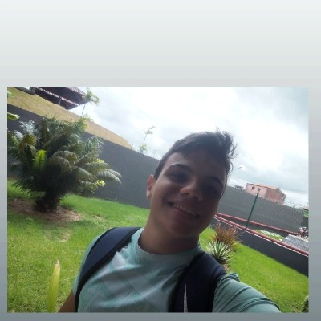

Desenvolvedor em formação | Suporte Técnico
Entrar em ContatoSou estudante do 6º período de Sistemas de Informação, com conhecimentos em Java, HTML e suporte técnico. Estou em busca da minha primeira oportunidade de estágio na área de tecnologia.
💻 Portfólio Pessoal
Site desenvolvido com HTML e CSS para apresentação profissional.
📋 Sistema de Cadastro (em desenvolvimento)
Projeto em Java com foco em lógica de programação.
✔ Java (básico)
✔ HTML e CSS
✔ GitHub
✔ Suporte técnico (manutenção e formatação)
Email: seuemail@email.com
GitHub: github.com/LucasAntonio2026